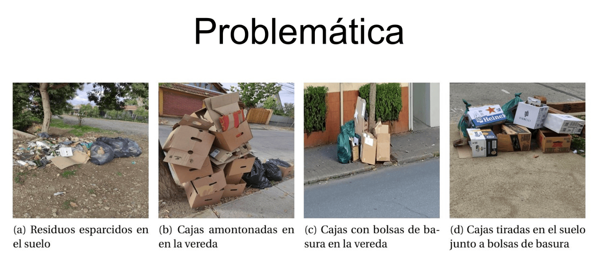
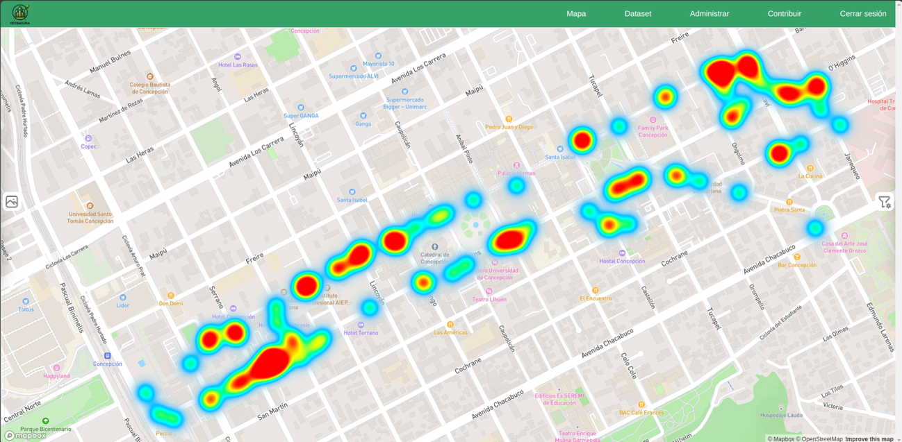
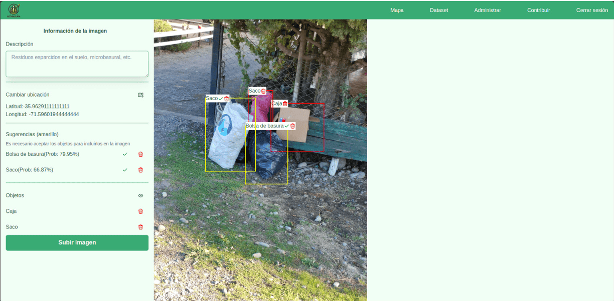

GeoBasura
Problemática
La gestión tradicional de residuos urbanos se basa en un modelo reactivo y poco eficiente. Las autoridades a menudo carecen de datos precisos sobre la ubicación y el tipo de desechos en tiempo real, lo que genera acumulaciones críticas y rutas de recolección subóptimas.
Esta falta de información granular impide el desarrollo de políticas públicas preventivas y reduce la capacidad de respuesta ante desparrames de basura en entornos complejos.

Resumen del Proyecto
GeoBasura es una plataforma integral diseñada para optimizar la gestión de residuos urbanos fusionando la ciencia ciudadana con la inteligencia artificial.

El sistema permite a los ciudadanos actuar como sensores urbanos, subiendo imágenes georreferenciadas de desechos que alimentan un mapa interactivo y sirven para entrenar un modelo de aprendizaje profundo. Esta solución proporciona a las autoridades información granular en tiempo casi real para optimizar rutas de recolección.
Arquitectura y Stack Tecnológico
El sistema se construyó con una arquitectura separada para asegurar su escalabilidad y rendimiento móvil.
Gestión de la interfaz, autenticación robusta y lógica de negocio (Cliente/Servidor).
Gestión robusta de datos y ORM para simplificar las interacciones SQL y asegurar integridad.
Extracción de metadatos EXIF y visualización en mapas interactivos.
Servicio independiente dedicado exclusivamente a procesar imágenes.
Implementación You Only Look Once para procesamiento en tiempo real.
Hitos y Logros Técnicos
